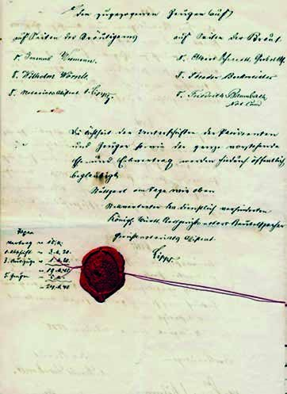
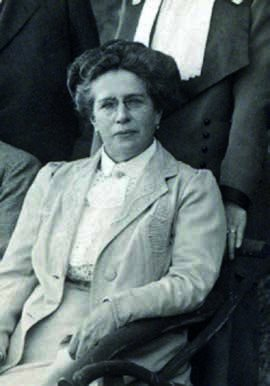
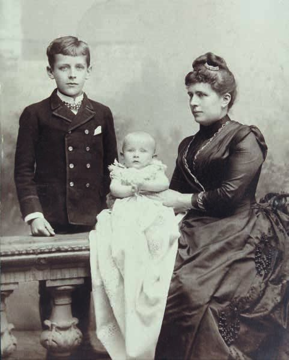
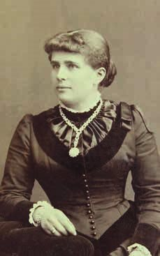
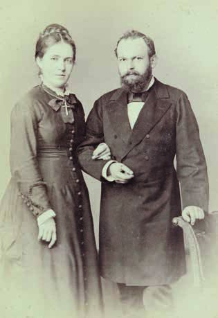
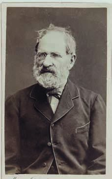

II. Die Geschichte von Friedrich Böhm · Kapitel 7
Emilie geb. Leonhard
Emilie Böhm, geb. Leonhard
(17.4.1858 – 1.5.1917) geboren als Tochter eines Zigarrenproduzenten in Quebec/ Kanada, kam zur Ausbildung nach Böblingen. Beim Besuch einer Internatsfreundin in Wachenheim lernte sie Friedrich Böhm kennen, es war wohl Liebe auf den ersten Blick. Sie heirateten und sie wurde zum ruhenden Pohl Friedrichs und der sechs gemeinsamen Kinder.
Die Familie ihrer Mutter Leonhard geb.Dinkelsacker besaβ in Böblingen die Bierbrauerei Dinkelsacker. 1873 trennt sich Christian von seinem jüngeren Bruder Wilhelm und dieser gründet 1888 in Stuttgart die Brauerei Dinkelacker. Wilhelm strich das „c“ aus seinem Namen und seine Brauerei hieß ab diesem
Zeitpunkt „Dinkelaker“. Die spätere Grossbrauerei Dinkelaker in Stuttgart hatte auch in Mannheim eine Niederlassung. Ich entsinne mich, daβ bei Besuchen in der Freβgasse in Mannheim mein Vater mir ein Anwesen, das zu dieser Brauerei gehörte, zeigte.
Das schrecklich blutige Ende ihres Mannes 1915 bei einer Nieren- Notoperation auf dem Küchentisch und der frühe Soldatentod des Sohnes Fritz brachen ihr 1917 das Herz.
Ihr Mann hatte ihr bei seinem Tode fast eine halbe Million Goldmark hinterlassen. Ohne familiäre Nachfolge im Unternehmen verlor die Familie das Interesse. Mit der Erbauseinandersetzung in der inflationsgeplagten Zeit ging der Familienzusammenhalt verloren.
Emilie geb. Leonhard
Es besteht eine Urkunde, die einige Auskunft über die Familienbeziehungen zu der Familie Leonhard gibt. In der Form einer letztwilligen Teilungsverfügung von 1880 der Frau Katharina Margarete Dürr, zweite Ehegattin von Carl August Leonhard, der von Stuttgart der Enkelin nach Wachenheim gefolgt war, wurden über 60.000.- Mark vermacht. Leider sind in dem mit gestochener Schrift verfassten Vertrag nur die Namen und Ortsbezeichnung in römischem Alphabet verfasst und der Rest in deutscher Kurrentschrift derer ich nicht mächtig bin. Es scheint sich um ein Vermächtnis zu handeln, welche die Erbschaft von Emilie Böhm geb. Leonhard und Ihren Bruder Paul Albert Leonhard betrach, aber an die Weinkellerei Georg Böhm in Wachenheim (Friedrich und Ludwig Böhm) erfolgte. Mit folgender eigenartiger Verteilung: Die Inhaber der Weinkellerei Georg Böhm in Wachenheim (Friedrich und Ludwig Böhm) erhieltn den Betrag von 58,898,5 Mark, wobei die Erbin selbst nur 2.441,67 Mark.
Als Friedrich am 21.3.1914 starb, hatte er gemäss ihrem gemeinsamen Testament das Vermögen seiner Gemahlin Emilie vermacht. Im gleichen Jahr fiel jedoch der eigentliche Erbfolger, Sohn Fritz an der Front.
Mit Ihrem Tode kurz danach hinterließ Emilie ein Testament vom 8.1.1916 (Bücherrevisor Gehr Stuttgart) ein Geschäftsvermögen von 443.560.28 Mark.
mit folgender Aufteilung: Georg Böhm 85.712.05 Mark Helene Marx 85.712.05 Mark Käthi Stuber 85.712.05 Mark Gertrud Bauer 85.712.05 Mark Maria Sturm 115.712.04 Mark Es scheint so, dass die Gesellschaft von den Geschäftsführern Paul Leonhard (Bruder von Emilie) und Ludwig Spring weiter betrieben wurde. Aus den überlieferten Schreiben der Geschwister geht weniger über Geschäftsvorgänge hervor als über Entnahmen von Gewinnen und Gesellschaftervermögen. Das erhebliche Geldguthaben der Familie wurde durch die Inflation aufgefressen. Zehn Jahre später, nach und nach, wurden die Vermögenswerte liquidiert. Seit dem Tode der Mutter ist unter den Erben der Wunsch nach Auflösung der Gesellschaft zu erkennen. Die Gesellschaft musste jedoch wegen der schweren Inflationsjahre weitergeführt werden. Es liegen verschiedene Schreiben ab Jan. 1927 vor, in denen von den Verkäufen berichtet wird. Wie groß nun die Gesamterlöse beim Verkauf waren und was mit diesen geschah, ist aus vorliegenden Unterlagen nicht zu ersehen. Ich weiß nur, dass ich 1957 noch Erlöse für Grundstücksverkäufe aus dieser Erbschaft erhielt.
Es besteht ein mehrseitiger Ehevertrag von Friedrich und Emilie, hier die letzte Seite mitunterschrieben von 6 Zeugen
Mutter, Mathilde geb. Dinkelsacker (23.2.1837
Vater Friedrich Leonhard (29.9.1835)
Der Gossvater zog im Alter zur Enkelin nach Wachenheim (Kuhnsches Anwesen)
Ihre Kusine Grünzweig aus Mannheim mit Gemahl
Das später durch die Auszahlung der Geschwister ausgeschlachtete Restunternehmen wurde zunächst an Herrn Paul Leonhard (Bruder von Emilie) und danach Kettinger und Spring weitergegeben und erhielt 1929 die Auflage, den Namen Böhm in der Firmierung zu löschen.
Voller dynastischer Träume wurde dann in den 30er Jahren von Georg Böhm, vielleicht auch, weil er als eingeheirateter Gesellschafter der konservativen Hochfamilie gegenüber ein gesellschaftliches Alibi suchen musste, die Familiegruft in Wachenheim erstellt (siehe Seite 43). Friedrich und Emilie wurden dorthin umgebettet. Alle seine Nachkommen wurden in dieser Gruft bestattet. Heute allerdings liegt dieses “Mausoleum” weit ab vom Wohnsitz der Namensträgern der Nachkommenschaft Friedrichs und Emilie Böhm.
Die “Stammesmutter” Emilie Böhm, geb. Leonhard, daneben Bruder Paul, darunter mit ihren Söhnen Georg und Friedrich





